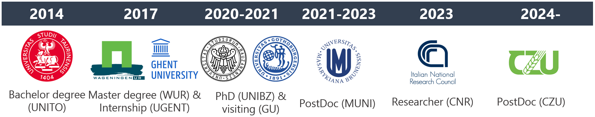

A plant ecologist by training, I bring 8+ years of research experience from various European scientific settings. My daily practice involves the integrated application of advanced R programming, machine learning, and GIS to effectively address my research questions.
Computer Skills
Programming Languages & Environments:
- R [expert]
- Data management in SQL (
DBI) and manipulation (tidyverse) - Statistical analyses and modeling (including Machine Learning with
tidymodels) - Data visualization (e.g.,
ggplot,leaflet,plotly) - Spatial data analysis:
- GIS / Simple Features (
sf) - Raster Data (
terra)
- GIS / Simple Features (
- Data management in SQL (
- Python [advanced]
- Supervised ML (
sklearn) - Data manipulation (
pandas,geopandas)
- Supervised ML (
- mySQL & PostgreSQL [basic]
- R Markdown, LaTeX, Quarto, R Shiny (creating dynamic reports and documentations) [advanced]
- Git & GitHub [advanced]
Education & Employment History

Postdoctoral fellow (2024 - current) at MOBI lab - Czech University of Life Sciences, Prague (Czech Republic);
Researcher (III level) (2023) at CNR-IRET - National Research Council of Italy, Pisa (Italy);
Postdoctoral fellow (2021 - 2023) at the Vegetation Science Group of the Department of Botany and Zoology, Masaryk University, Brno (Czech Republic);
PhD in Mountain Environment & Agriculture (2017 - 2021) cum laude at the Free University of Bozen-Bolzano, Bolzano (Italy). Thesis title: “Meta-analyses upon the intraspecific plant trait variability within the environmental and geographic space” (supervisor: Camilla Wellstein);
Visiting PhD student (2020, 6 months) at the Antonelli Lab, Gothenburg Global Biodiversity Centre - University of Gothenburg, Gothenburg (Sweden);MSc Environmental Science (2015 - 2017) at Wageningen University & Research, Wageningen (The Netherlands). MSc thesis at the ESA group: “Plant biodiversity loss following increased atmospheric nitrogen deposition: A systematic review” (supervisors: Wim De Vries; Rob Alkemade);
Intern (MSc Internship) (2017, 4 months) at Forest & Nature Lab – Department of Forest and Water Management – Ghent University, Ghent (Belgium);BSc Forest Science (2011 - 2014) at University of Turin, Turin (Italy) cum laude. Thesis title (in Italian): “Redox reactions in the soil and their environmental significance” (supervisor: Franco Ajmone Marsan).